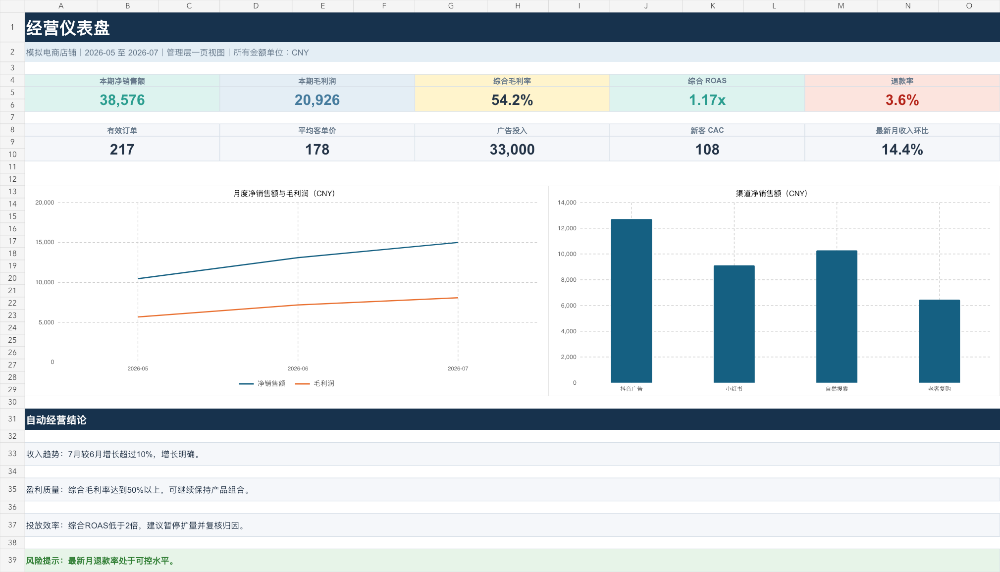

自动清洗与对账
保留原始导出，单独建立计算层；订单数、销售额、毛利润与广告投入逐项核对。
订单表 + 广告表 → 经营结论
自动完成数据清洗、指标计算、渠道与产品分析、异常提示和管理层仪表盘。先用一个周期验证价值，再决定是否搭建长期月报。
无需后台密码 · 可先脱敏 · 所有示例数据均为模拟数据

交付内容
原始数据、处理公式、分析结果、仪表盘和检查控制相互分离。每个关键数字都能追溯到输入，不用相信“黑箱结论”。
保留原始导出，单独建立计算层；订单数、销售额、毛利润与广告投入逐项核对。
净销售额、毛利率、ROAS、客单价、CAC 与退款率集中展示，打开即见重点。
找出贡献收入与利润的渠道和产品，同时标出低效投放与异常退款。
结论由工作簿公式驱动，输入更新后同步变化，不依赖一次性的手写分析。
演示结果
演示数据中，7 月收入环比增长 14.4%，综合毛利率为 54.2%；但综合 ROAS 只有 1.17 倍。报告不会只讲好消息，而是把需要行动的问题放在同一页。
工作方式
明确业务周期、字段含义，以及销售额、退款和成本的计算规则。
提供脱敏后的 XLSX/CSV；无需提供平台账号、密码或后台权限。
先完成一个周期的工作簿和重点结论，核对通过后再决定是否长期使用。
验证有价值后，将字段映射、检查规则与报告结构固化为可重复流程。
开始试做
不需要先发送原始数据。可以在线提交四个业务问题，也可以复制需求清单后回复给把本页发给你的人；确认范围后，再提供脱敏样表。
在线咨询只填写业务概况，不上传原始表格；没有 GitHub 账号时，可复制后回到原聊天窗口粘贴。
数据边界
使用 XLSX 或 CSV 即可，不要求提供平台密码、验证码或远程登录。
客户姓名、电话、地址可删除或替换，只保留完成分析所需的字段。
退款、成本、折扣和归因假设明确记录，避免把估计包装成事实。